Deskripsi
Leo adalah seorang pemimpin yang natural, mereka juga terkenal dengan keberanian dan kehangatan mereka. Mereka senang mengambil inisiatif dan berkarisma. Mereka juga senang berhasil dan senang usaha mereka di apresiasi. Mereka juga cenderung dramatis dan suka perhatian. Walau begitu, mereka adalah orang yang murah hati.
Kompatibel
Aries dan Sagitarius cocok dengan Leo, dikarenakan energi dan ambisi mereka yang kuat. Tingkat kecocokan mereka mencapat 95%. Sedangkan Leo sangat tidak cocok dengan Scorpio dan Taurus. Dikarenakan sifat scorpio yang intens dan misterius, dan Taurus yang keras kepala. Keduanya hanya cocok mencapai 20%.
Tokoh Zodiak

Barrack Obama
4 Agustus

Jessica Mila
3 Agustus

Adipati Dolken
19 Agustus